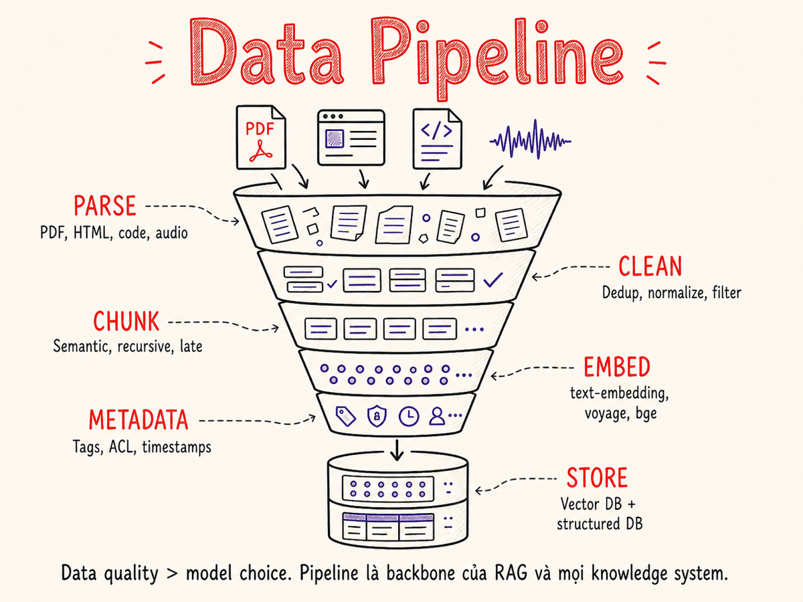

Data Pipeline cho AI
Từ raw document đến knowledge store sẵn sàng phục vụ RAG: ingestion, parsing, cleaning, enrichment, annotation, và continuous refresh.

14.1 Data pipeline cho LLM apps khác với data engineering truyền thống như thế nào
Trong data engineering truyền thống, pipeline thường xử lý dữ liệu có cấu trúc rõ ràng: rows, columns, schemas cố định. Mục tiêu là tính toán aggregate, load vào data warehouse, feed vào dashboard hoặc ML model.
Data pipeline cho LLM applications có những điểm khác biệt căn bản:
- Unstructured & semi-structured content là trọng tâm — PDF, HTML, email, code, audio transcripts. Không phải rows.
- Semantic fidelity quan trọng hơn byte fidelity — nội dung sau parse phải giữ đúng ý nghĩa để model hiểu, không chỉ cần đúng ký tự.
- Chunking là một quyết định thiết kế — cách chia văn bản thành chunks ảnh hưởng trực tiếp đến recall trong RAG.
- Metadata là first-class citizen — nguồn gốc tài liệu, ngày tạo, author, section title đều là context quý giá khi retrieve.
- Pipeline không chỉ chạy một lần — tài liệu thay đổi, knowledge base phải được refresh liên tục.
- Privacy là constraint cứng — PII không thể leak vào vector store rồi được retrieve vào prompt.
Với ML truyền thống, dữ liệu xấu làm model dự đoán sai. Với RAG, dữ liệu xấu khiến model tự tin nói sai điều — và còn trích dẫn nguồn xấu đó. Đây là lý do pipeline quality quan trọng hơn nhiều người nghĩ.
14.2 Document ingestion sources
Một hệ thống RAG thực tế thường phải xử lý nhiều loại nguồn cùng lúc. Mỗi loại có đặc thù riêng:
| Source type | Format điển hình | Thách thức | Tool / approach |
|---|---|---|---|
| Documents | PDF, DOCX, PPTX | Layout phức tạp, bảng, hình ảnh, cột | PyMuPDF, pdfplumber, Unstructured |
| Web / HTML | HTML, sitemap | Navigation, ads, cookie banners phải loại | Playwright + readability, trafilatura |
| Code repos | .py, .ts, .java, .md | Syntax-aware chunking, dependencies | tree-sitter, langchain code splitter |
| Databases | SQL tables, NoSQL docs | Joins, schema, null values | Custom SQL queries → serialised text |
| APIs | JSON/XML REST, GraphQL | Pagination, auth, rate limits | Custom connectors, Airbyte |
| Audio / Video | MP3, WAV, MP4, MKV | Latency, speaker diarisation, accuracy | Whisper, Deepgram, AssemblyAI |
| Scanned docs / images | PNG, TIFF, scanned PDF | OCR errors, rotated pages, low res | Tesseract, AWS Textract, Azure DI |
| Emails / Slack | .eml, API | Threading, quoted replies, noise | Custom parsers, connector platforms |
Connector architecture
Khi số nguồn tăng lên, nên thiết kế một connector abstraction: mỗi source type có một connector implement interface chung (fetch() → RawDocument[]). Pipeline downstream không cần biết nguồn là gì — chỉ cần nhận RawDocument.
Các platform như Airbyte, Fivetran, Nango cung cấp connector có sẵn cho hàng trăm SaaS — đặc biệt hữu ích khi cần kết nối Salesforce, HubSpot, Notion, Google Drive.
14.3 Parsing
Parsing là bước biến raw bytes thành semantic text có cấu trúc. Đây thường là bước khó nhất và ảnh hưởng nhiều nhất đến chất lượng downstream.
| Tool | Mạnh nhất ở | Điểm yếu | License |
|---|---|---|---|
| PyMuPDF (fitz) | PDF text extraction nhanh, chính xác với text-based PDF | Yếu với scanned/complex layout | AGPL / commercial |
| pdfplumber | Table extraction từ PDF, toạ độ ký tự | Chậm hơn PyMuPDF | MIT |
| Unstructured.io | Multi-format (PDF, DOCX, HTML, email...), layout detection, element classification | Phụ thuộc nhiều, model detection tốn tài nguyên | Apache 2 / hosted |
| LlamaParse | LLM-powered parsing, bảng phức tạp, charts → markdown | Có chi phí API, latency cao hơn | Commercial API |
| Apache Tika | Hàng trăm format, Java ecosystem | Java dependency, khó containerise nhẹ | Apache 2 |
| Docling (IBM) | Layout-aware PDF, bảng → JSON/Markdown chuẩn, Granite-Docling vision model 258M | Tài nguyên tính toán cao hơn khi dùng vision pipeline | MIT (Linux Foundation) |
| Reducto | Hybrid vision-first + Agentic OCR, accuracy cao trên tài liệu tài chính/pháp lý phức tạp | Commercial API, chi phí cao hơn; on-prem phải liên hệ enterprise | Commercial |
Layout-aware parsing
PDF không phải là format có semantic structure — nó là tập hợp các lệnh vẽ. Một heading có thể chỉ là text được in đậm và to hơn, không có tag <h2>. Layout-aware parser dùng bounding box, font size, spacing để suy ra cấu trúc.
Với tài liệu multi-column (báo cáo tài chính, paper khoa học), parser phải nhận ra reading order đúng — không đọc cột trái-phải trái-phải mà đọc hết cột trái rồi mới sang cột phải.
Xử lý bảng (tables)
Tables là một trong những thứ khó parse nhất. Các approach:
- Cell-by-cell extraction (pdfplumber): tốt với bảng đơn giản, tự căn chỉnh
- Table detection model (Unstructured, Docling): dùng CV để detect bảng rồi OCR từng cell
- LLM-based (LlamaParse): gửi page image cho vision model, yêu cầu trả về markdown table — kết quả tốt nhất nhưng tốn tiền
- Serialization strategy: chuyển bảng thành Markdown hoặc JSON trước khi chunk — đừng để bảng bị cắt ngang giữa chunk
Vision-LLM parsing và ColPali
Một hướng tiếp cận khác hoàn toàn: thay vì extract text rồi embed, hãy embed trực tiếp image của trang tài liệu. ColPali (ICLR 2025) là vision-language model tạo ra multi-vector embeddings từ ảnh trang — bao gồm cả layout, bảng, biểu đồ, font — mà không cần bước OCR hay text extraction riêng. ColPali dùng late interaction (kiểu ColBERT) ở patch level, cho phép so khớp chi tiết giữa query token và vùng cụ thể trên trang.
Ưu điểm: loại bỏ toàn bộ parsing pipeline, handle tốt tài liệu phức tạp (annual report, slide deck). Nhược điểm: index nặng hơn, infra vector store phải hỗ trợ multi-vector. Phù hợp nhất với corpus tài liệu dày đặc hình ảnh hoặc khi OCR accuracy là bottleneck.
Chunking strategy
Có nhiều chiến lược chunking, mỗi loại phù hợp với corpus khác nhau:
- Fixed-size / Recursive character splitting: đơn giản, tốc độ cao, baseline tốt cho prose thông thường
- Semantic chunking: nhóm các câu có embedding tương đồng vào cùng chunk — tăng 2–9 pp recall so với fixed-size nhưng tốn kém embedding tại chunking time; NAACL 2025 cho thấy gains không nhất quán
- Late chunking: embed toàn bộ document với long-context model trước, sau đó tách token embeddings thành chunks — giữ được context xung quanh mà không cần prepend header; phù hợp khi chunk có nhiều pronoun/cross-reference
- Hierarchical chunking: pattern phổ biến nhất trong production 2025–2026 — chunk nhỏ để retrieve chính xác, chunk lớn (parent) để cung cấp đủ context cho model; giải quyết precision-context trade-off
# Example: recursive character splitter với metadata preservation
from langchain.text_splitter import RecursiveCharacterTextSplitter
splitter = RecursiveCharacterTextSplitter(
chunk_size=512,
chunk_overlap=64,
separators=["\n\n", "\n", ". ", " "]
)
def chunk_document(doc: RawDocument) -> list[Chunk]:
chunks = splitter.split_text(doc.text)
return [
Chunk(
text=c,
metadata={
"source": doc.source_id,
"page": doc.page_number,
"section": doc.inferred_section,
"chunk_index": i,
}
)
for i, c in enumerate(chunks)
]512 tokens phù hợp với prose thông thường. Code nên giữ nguyên function-level (không cắt ngang function). FAQ/Q&A nên giữ nguyên cặp Q&A. Bảng tài chính nên giữ nguyên table. Rule: chunk phải có ý nghĩa khi đứng một mình. Trong production, hierarchical chunking (chunk nhỏ + parent chunk) đang là pattern được adopt rộng nhất vì giải quyết đồng thời precision và context.
14.4 Cleaning
Cleaning loại bỏ noise và chuẩn hóa data trước khi embed. Bỏ qua bước này sẽ gây ra retrieval quality thấp và tốn embedding cost.
HTML stripping
Với content từ web, phải loại toàn bộ HTML tags, navigation menus, cookie banners, footer boilerplate trước khi đưa vào pipeline. Thư viện trafilatura và readability-lxml làm việc này tốt hơn BeautifulSoup đơn thuần vì chúng hiểu "main content" của trang.
Deduplication
Duplicate chunks lãng phí storage, làm retrieval trả về kết quả lặp, và bias model về nội dung được lặp nhiều. Hai approach chính:
| Method | Cách hoạt động | Phù hợp với | Chi phí |
|---|---|---|---|
| Exact hash | SHA-256 của text sau normalize | Duplicate hoàn toàn | Rất thấp |
| MinHash (LSH) | Locality-sensitive hashing trên shingles | Near-duplicate (copy-paste với sửa nhỏ) | Thấp, scale tốt |
| Embedding-based | Cosine similarity giữa embedding vectors | Semantic duplicate (cùng ý khác từ) | Cao (cần embed trước) |
| Simhash | Fingerprint bit-level, Hamming distance | Near-duplicate, web-scale | Thấp |
Normalization
- Unicode normalization (NFC/NFKC) — thống nhất cách biểu diễn ký tự
- Whitespace collapse — loại tab, multiple spaces, non-breaking spaces
- Encoding fix — latin1/windows-1252 được parse thành UTF-8 sai → ftfy library
- Line ending normalize —
\r\n→\n - Boilerplate removal — "Page X of Y", header/footer lặp qua các trang
Language filter
Nếu knowledge base chỉ nên chứa tiếng Anh (hoặc tiếng Việt), dùng langdetect, fastText lid.176, hoặc lingua-py để lọc. Lưu ý: đoạn text rất ngắn (<50 chars) thường bị detect sai — nên giữ lại khi uncertain thay vì loại nhầm.
14.5 Enrichment
Enrichment bổ sung metadata vào chunk để retrieval thông minh hơn. Đây là bước phân biệt RAG "basic" và RAG "production-grade".
Metadata extraction với LLM
# Extract entities và generate summary cho mỗi chunk
async def enrich_chunk(chunk: Chunk, llm: LLMClient) -> EnrichedChunk:
prompt = f"""Analyze this text chunk and return JSON:
{{
"summary": "1-sentence summary",
"entities": ["list", "of", "named entities"],
"topics": ["2-4 topic tags"],
"language": "vi or en",
"content_type": "prose|table|code|list|qa"
}}
Text: {chunk.text[:1000]}"""
result = await llm.complete(prompt, response_format="json")
return EnrichedChunk(
**chunk.__dict__,
summary=result["summary"],
entities=result["entities"],
topics=result["topics"],
)Với large document sets, dùng batch API (OpenAI Batch, Anthropic Batch) để giảm cost enrichment xuống 50%. Enrichment không cần realtime.
Structural metadata
Nhiều metadata quan trọng không cần LLM — chỉ cần extract đúng từ source:
- Document-level: title, author, created_at, modified_at, source_url, doc_type, language
- Section-level: heading path (e.g. "Chapter 3 > 3.2 Results"), page number, section depth
- Chunk-level: chunk index, char offset, token count, parent doc ID
Prepend một header ngắn vào mỗi chunk trước khi embed: "[Doc: Q3 Report 2024 | Section: Revenue]". Giúp embedding capture context của chunk thay vì chỉ content. Kỹ thuật này được Anthropic gọi là Contextual Retrieval (ra mắt tháng 9/2024) — kết hợp contextual embeddings với BM25 để cải thiện retrieval failure rate ~67% theo benchmark của Anthropic. AWS Bedrock Knowledge Bases đã tích hợp pattern này natively.
Embedding models cho RAG (tóm tắt)
Chọn embedding model ảnh hưởng trực tiếp đến retrieval quality. Các lựa chọn phổ biến năm 2025–2026:
| Model | Điểm mạnh | Ghi chú |
|---|---|---|
| OpenAI text-embedding-3-large | General-purpose, mạnh về tiếng Anh, MTEB cao | Commercial API; matryoshka dimensions (giảm dim không mất nhiều quality) |
| Voyage AI voyage-3-large / voyage-4 | Tốt nhất cho retrieval-focused metrics; domain models (law, finance, code) | Voyage AI được MongoDB mua lại 2/2025; voyage-4 ra đầu 2026 |
| Cohere embed-v4 | Multimodal (text + image), MTEB 65.2; multilingual tốt | Commercial API |
| BGE-M3 (BAAI) | Open-source; dense + sparse + multi-vector trong 1 model; multilingual | Self-hosted; best quality-cost ratio cho on-prem |
| Gemini Embedding 2 | Multimodal 5 modalities (text, image, video, audio, PDF); 100+ ngôn ngữ; 3072 dims | Ra 3/2026; tốt nhất cho multimodal search |
Chi tiết benchmark và so sánh: xem §08 Vector Search & Knowledge Stores.
14.6 Synthetic data generation
Synthetic data giải quyết vấn đề thiếu training data hoặc thiếu labeled examples. Có ba use case chính:
Fine-tuning data
Khi cần fine-tune model cho domain cụ thể nhưng không có đủ (instruction, response) pairs. Approach:
- Lấy tài liệu domain làm "seed"
- Dùng strong model (GPT-4.1, Claude 3.7 Sonnet, Gemini 2.5 Pro) để generate diverse questions từ tài liệu
- Generate câu trả lời lý tưởng cho mỗi câu hỏi, có citation
- Human review sample (không cần review 100%) để catch hallucination
- Format thành instruction dataset (Alpaca, ShareGPT format)
Eval set generation
Để eval RAG pipeline, cần (question, expected_answer, relevant_chunk) triplets. Manual annotation tốn kém. Synthetic approach: dùng LLM generate câu hỏi từ existing chunks, dùng LLM khác generate "ground truth answer", rồi dùng LLM-as-judge để score. Framework: RAGAS, DeepEval, TruLens.
Data augmentation
Cho classification tasks, augment bằng cách paraphrase ví dụ hiện có. Đặc biệt hữu ích khi một class có ít examples hơn class khác (class imbalance).
Synthetic data capture distribution của strong model, không phải distribution thực. Nếu fine-tune model nhỏ chỉ bằng synthetic data từ GPT-4o, model nhỏ học cách "nghe giống GPT-4o" thay vì học task thực. Hãy mix với real data, và luôn eval trên real test set.
14.7 Annotation workflows
Dù có synthetic data, human annotation vẫn không thể tránh hoàn toàn — đặc biệt cho việc tạo ground truth, đánh giá edge cases, và RLHF preference data.
Label Studio
Open-source annotation platform, self-hosted. Hỗ trợ NLP, CV, audio. Tích hợp được với ML backend để "pre-label" rồi human chỉ cần review/correct. Phù hợp với team nhỏ, data sensitive (không muốn gửi ra ngoài).
Argilla
Tập trung vào NLP/LLM annotation. Giao diện đẹp cho text annotation, có mode "human feedback" cho RLHF. Tích hợp tốt với HuggingFace datasets. Phù hợp hơn cho workflow AI-assisted annotation.
Human-in-the-loop patterns
Effective annotation không phải "human labels everything":
- Active learning: model tự identify những ví dụ mà nó uncertain nhất, chỉ gửi những ví dụ đó cho human — giảm annotation cost 5-10x
- LLM pre-label + human verify: LLM label tất cả, human chỉ review những label có confidence thấp hoặc sample ngẫu nhiên
- Adjudication workflow: với labeling khó (opinion, nuance), dùng ≥2 annotators + adjudicator khi disagree, track inter-annotator agreement (Cohen's kappa)
14.8 Refresh strategy
Knowledge base không static — tài liệu thay đổi, bị xóa, có tài liệu mới. Cần chiến lược refresh rõ ràng.
Incremental refresh
Chỉ xử lý tài liệu mới hoặc đã thay đổi kể từ lần chạy trước. Cần:
- Change detection: compare content hash, modified_at timestamp, hoặc ETag (với HTTP sources)
- Soft delete: khi document bị xóa từ source, mark chunk là deleted trong vector store thay vì xóa ngay (để có thể rollback)
- Document versioning: giữ nhiều version của cùng doc, có thể query theo version
Full re-index
Khi thay đổi embedding model, chunking strategy, hoặc enrichment logic, cần full re-index toàn bộ corpus. Best practice: build new index song song, validate chất lượng, rồi cutover (blue-green deployment cho vector store).
Event-driven ingestion
Với sources có webhook (Confluence, Notion, Google Drive), trigger ingestion ngay khi document thay đổi — latency từ edit đến searchable có thể dưới 1 phút. Dùng message queue (Kafka, SQS, RabbitMQ) để buffer và đảm bảo at-least-once processing.
Pipeline orchestration
Khi pipeline phức tạp (nhiều bước phụ thuộc, retry logic, monitoring), cần một orchestration layer. Các lựa chọn phổ biến:
- Dagster: asset-centric, lineage và data quality là first-class — phù hợp khi cần track "chunk nào được tạo từ document nào". Dagster 1.13 (2025) thêm Components và dg CLI. Tốt nhất cho teams muốn observability đầy đủ.
- Prefect: Python-native, dynamic workflows, nhẹ hơn Airflow về ops overhead. Prefect Marvin (2025) tích hợp agent framework cho human-in-the-loop approval.
- Apache Airflow 3 (GA 2025): thêm asset-aware scheduling, Human-in-the-Loop Operators — phù hợp nếu team đã quen Airflow.
- Flyte: Kubernetes-native, phù hợp ML/AI pipeline phức tạp có GPU tasks.
Với pipeline AI/RAG nhỏ, cron job đơn giản + structured logging thường đủ. Chỉ thêm orchestrator khi cần retry logic, dependency tracking, hoặc nhiều team dùng chung pipeline.
Khi nào dùng: corpus lớn, tolerance cao với stale data (ví dụ: product docs update mỗi sprint).
Cách làm: Cron job mỗi giờ/ngày. Scan source, compute hash, so với hash đã lưu, chỉ xử lý changed/new docs.
Ưu điểm: Đơn giản, dễ debug, không cần infra phức tạp.
Khi nào dùng: tolerance thấp với stale data, source hỗ trợ webhook (Confluence, Notion, Slack).
Cách làm: Webhook → SQS/Kafka → Lambda/consumer → parse + embed + upsert.
Ưu điểm: Gần realtime, chỉ xử lý documents thực sự thay đổi.
Khi nào dùng: Mix sources — một số hỗ trợ webhook, một số không.
Cách làm: Event-driven cho sources hỗ trợ, scheduled crawl cho sources không hỗ trợ. Unified processing queue cho cả hai.
Ưu điểm: Best of both — realtime khi có thể, reliable fallback khi không.
14.9 Privacy: PII detection & redaction
Một khi PII (tên, email, CCCD, số thẻ) được embed vào vector store, nó có thể được retrieved vào prompt của bất kỳ user nào. Với RAG system, không có row-level security như database — bất kỳ query nào cũng có thể retrieve chunk chứa PII của người khác.
Microsoft Presidio
Open-source PII detection và anonymization. Hỗ trợ: tên, email, phone, địa chỉ, số thẻ tín dụng, SSN, IP, và nhiều loại entity khác. Có thể extend với custom recognizers cho PII đặc thù của domain.
from presidio_analyzer import AnalyzerEngine
from presidio_anonymizer import AnonymizerEngine
analyzer = AnalyzerEngine()
anonymizer = AnonymizerEngine()
def redact_pii(text: str, language: str = "en") -> str:
results = analyzer.analyze(text=text, language=language)
anonymized = anonymizer.anonymize(text=text, analyzer_results=results)
return anonymized.text
# Input: "Contact John Smith at john@example.com or +1-555-0123"
# Output: "Contact <PERSON> at <EMAIL_ADDRESS> or <PHONE_NUMBER>"Custom regex patterns
Presidio có thể miss PII domain-specific (mã hồ sơ bệnh án, số hợp đồng nội bộ). Bổ sung custom regex recognizer:
- Số CCCD Việt Nam:
\b\d{9}|\d{12}\b - Số điện thoại VN:
(0|\+84)[3-9]\d{8} - Internal IDs: pattern riêng của từng hệ thống
Redaction strategy
Không phải lúc nào cũng muốn xóa — đôi khi muốn giữ PII trong secure store riêng và chỉ đưa vào prompt khi user có quyền. Approach: replace PII với placeholder reference ([PII:uuid]), lưu mapping trong encrypted store, resolve lại khi cần.
14.10 Quality monitoring
Pipeline data chạy liên tục — cần monitor để detect degradation trước khi nó ảnh hưởng đến end users.
Data drift
Khi distribution của incoming documents thay đổi (ví dụ: source bắt đầu viết bằng tiếng khác, format thay đổi, content type shift), pipeline cũ có thể handle kém hơn. Monitor bằng cách track: language distribution, avg chunk length, parse error rate, enrichment confidence scores.
Missing và malformed data
Alert khi:
- Parse success rate giảm đột ngột (source format đổi)
- Chunk count per document quá thấp (parsing fail silent)
- Embedding null rate tăng
- Metadata fields bắt đầu xuất hiện null value nhiều hơn baseline
- Dedup rate tăng bất thường (source đang gửi duplicate)
Retrieval quality metrics
Dùng test set (synthetic hoặc human-labeled) để track recall@k và MRR theo thời gian. Nếu metrics giảm mà pipeline code không đổi, nguyên nhân thường là data quality degradation.
Track 5 metrics mỗi pipeline run: (1) documents_processed, (2) parse_error_rate, (3) avg_chunk_tokens, (4) pii_redacted_count, (5) dedup_rate. Nếu bất kỳ metric nào lệch >2 sigma so với 7-day baseline, trigger alert.
Tóm tắt
- Data pipeline cho LLM apps ưu tiên semantic fidelity, chunking strategy, và metadata — khác với pipeline truyền thống tập trung vào structured data transforms.
- Parsing là bước khó nhất — chọn tool phù hợp: Unstructured cho đa dạng, LlamaParse Agentic cho bảng phức tạp, PyMuPDF cho speed, Docling (MIT, Linux Foundation) cho self-hosted quality, Reducto cho enterprise accuracy. ColPali là hướng mới: embed trực tiếp page image, bỏ qua OCR.
- Chunking: hierarchical chunking (chunk nhỏ + parent) là pattern phổ biến nhất 2025–2026. Late chunking và semantic chunking có use case riêng nhưng không phải mặc định tốt hơn.
- Cleaning bao gồm HTML strip, dedup (MinHash cho near-dup, embedding-based cho semantic dup), normalize, và language filter.
- Enrichment — metadata extraction, LLM-generated summaries, và Contextual Retrieval (Anthropic, Sep 2024) — cải thiện retrieval failure rate ~67%. Embedding model quan trọng: Voyage voyage-4, OpenAI text-3-large, BGE-M3, Gemini Embedding 2 tùy use case.
- Synthetic data hữu ích cho fine-tuning và eval (dùng GPT-4.1, Claude 3.7 Sonnet, Gemini 2.5 Pro làm teacher), nhưng không thay thế real data hoàn toàn.
- Refresh strategy: event-driven cho realtime sources, scheduled batch cho bulk, hybrid cho production. Khi pipeline phức tạp: Dagster (observability), Prefect (Python-native), Airflow 3 (established teams).
- PII redaction (Presidio + custom regex) phải là bước bắt buộc trước khi data vào vector store.
- Monitor parse error rate, dedup rate, chunk stats, và retrieval quality metrics liên tục để detect data degradation sớm.